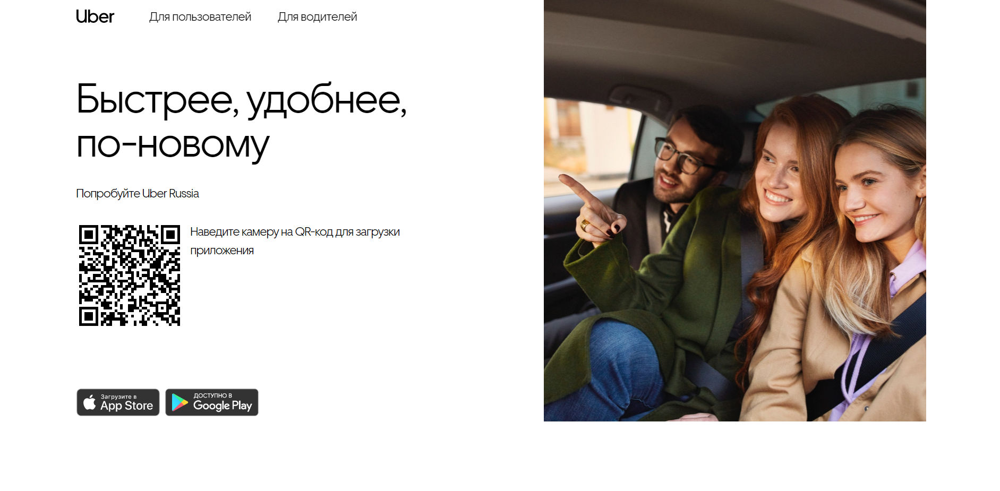

Online to Offline (O2O)
Потенциальные клиенты находят тем или иным способом (через поисковые системы, контекстная реклама, социальные сети) маркетплейсы, а целевую услугу или товар получают уже в физическом пункте выдачи. Так работает Wildberries, где человек получает, например, футболку, и может ее примерить и отказаться от покупки, если его что-то не устроило.
По схеме O2O работают такси-гиганты типа «Яндекс.Такси» и Uber: когда машину мы выбираем в интернете, а в нужный час приезжает настоящий автомобиль. Сюда же можно добавить купонные агрегаторы.

Uber — пример O2O-маркетплейса по коммуникации с покупателями